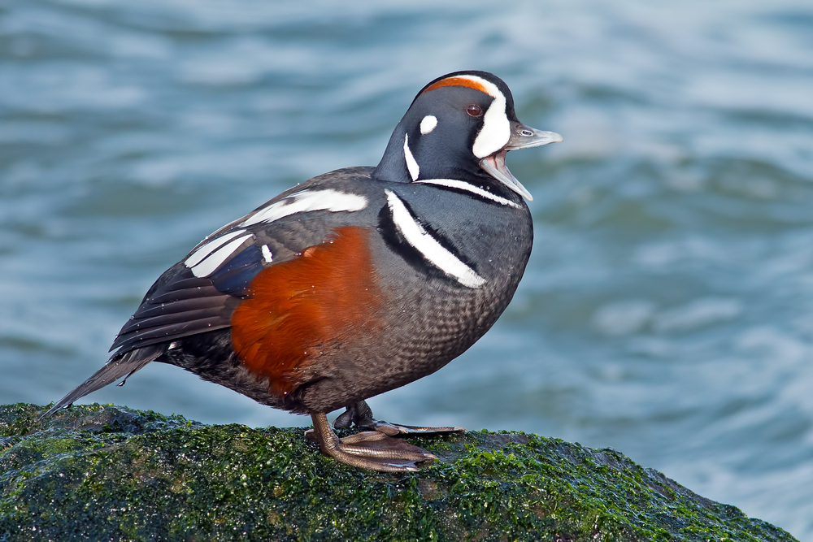

C'est à son plumage extraordinairement bigarré que l'arlequin plongeur doit d'avoir hérité du nom synonyme d'un
personnage très coloré de la pantomime italienne. Sa taille est modeste. Le corps du mâle est bleu-ardoise,
rehaussé de marques blanches et noires. Les taches blanches sont situées à la base du bec, sur l'oreille et le
côté du cou. D'autre part, un mince collier blanc incomplet entoure le cou. Une autre ligne blanche bordée de
noir barre la poitrine. Ses flancs sont de couleur marron. La partie inférieure des ailes est brune ainsi que le
croupion, les pattes et les pieds sont gris-bleu. La femelle arlequin est très différente du mâle. Elle porte
une robe brun terne et les côtés de sa tête sont ornés de trois taches blanches. Le ventre est blanc, grêlé de
taches brun clair. Les juvéniles ressemblent à la femelle jusqu'à l'automne mais obtiennent leur plumage complet
et définitif au cours de la deuxième année.
Taille : 51 cm
Envergure : 56 à 66 cm
Poids : 500 à 726 g
Ordre : Ansériformes
Famille : Anatidés
Genre : Histrionicus
Espèce : histrionicus